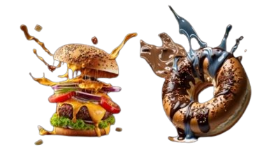
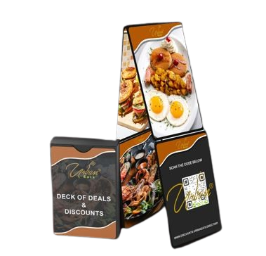
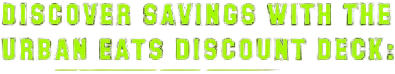

The Urban Eats Directory is your curated guide to the best local dining experiences. Featuring neighborhood favorites and hidden gems alike, our directory connects you with a diverse range of locally owned restaurants and eateries, making it easier than ever to discover new flavors in your community. Whether you’re looking for a cozy café, family-owned diner, or the latest hotspot, Urban Eats brings the local dining scene right to your fingertips.

At Urban Eats, we believe that food is a cornerstone of community, and every restaurant tells its own story. Our directory is dedicated to supporting local businesses, giving them a platform to reach new customers and celebrate their unique contributions to the neighborhood. Each listing offers a taste of the local culture, showcasing the dishes and flavors that make your community vibrant and distinct.


With the Urban Eats Discount Deck, dining locally is more rewarding than ever. This exclusive deck offers discounts and special deals at a variety of restaurants featured in the Urban Eats Directory, helping you explore new flavors and revisit old favorites—all while saving. Each card provides a unique discount, making it a perfect way to enjoy your community’s best dining options at a value.
The Urban Eats Directory is more than just a restaurant list; it’s a resource for conscious dining. With the option for eco-friendly delivery through our partner, Urban Flow’s electric vehicles, you can enjoy your favorite local meals sustainably. Explore the Urban Eats Directory to find the flavors you love and discover new ones—all while supporting a thriving connected community.